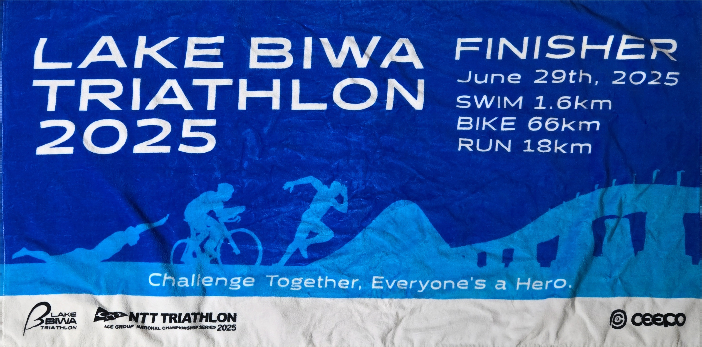
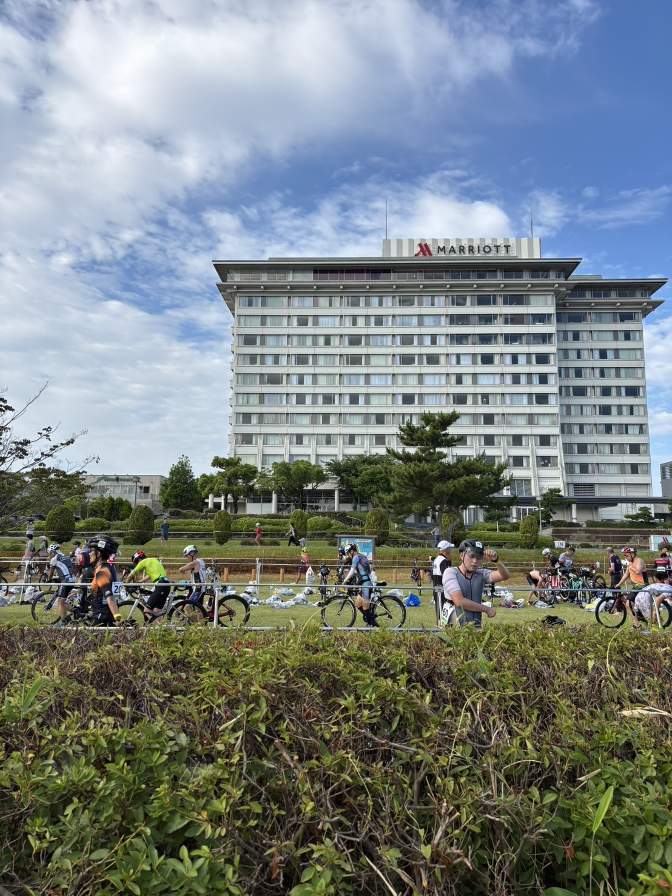
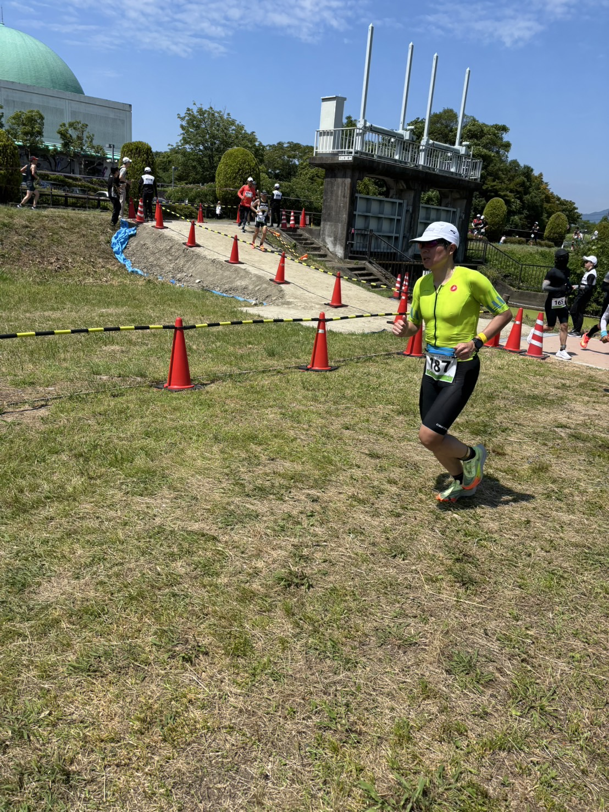

大会概要
レース結果
| セクション | タイム | 順位 |
|---|---|---|
| 🏊 スイム 1.6km | 42:30 | 334位 |
| 🔁 T1 | 6:44 | ― |
| 🚴 バイク 66km | 2:10:27 | 199位 |
| 🔁 T2 | 5:54 | ― |
| 🏃 ラン 18km | 1:30:50 | 55位 |
リザルトから振り返る
🏊 スイム
スイムは1.6kmを42分30秒、 全体334位だった。
100m平均では約2分39秒。 このレースで最も順位が低く、 総合順位を押し下げた最大の区間だった。
現在のODサブ2時間30分という目標から考えても、 スイムのフォーム改善と巡航ペース向上が 最優先課題になる。
🔁 T1
T1は6分44秒。 ウェットスーツを脱ぐ動作や、 ヘルメット、ゼッケン、 バイク装備の準備に 改善余地がある。
トランジションは、 体力を大きく消耗せずに 短縮しやすい区間。 動作順を固定して反復練習したい。
🚴 バイク
バイクは66kmを2時間10分27秒、 全体199位だった。
平均速度を単純計算すると 約30.4km/h。 スイムの334位から、 バイクでは順位を戻している。
今後はFTP向上に加え、 長時間エアロポジションを維持する力、 後半も出力を落とさない持久力、 ランへ脚を残すペーシングを強化したい。
🔁 T2
T2は5分54秒。 T1と合計すると12分38秒となる。
ODサブ2時間30分で掲げている トランジション合計5分以内と比べると、 大きな短縮余地がある。
シューズ、帽子、ゼッケン、 補給物の配置を固定し、 バイクを置いてから走り出すまでの 手順を練習しておきたい。
🏃 ラン
ランは18kmを1時間30分50秒、 全体55位だった。
1km平均では約5分03秒。 スイムとバイクを終えた後の 18kmとしては、 ほかの区間より高い順位を記録した。
ランはこのレースでも強み。 今後は練習量を増やしすぎず、 現在の走力を維持しながら、 スイムとバイクへ時間を配分するのが合理的。
フォトギャラリー



このレースから見えた課題
- スイムのフォームと巡航力を改善する
- T1・T2の動作手順を固定する
- バイクの巡航速度と持久力を高める
- ランは現在の強みを維持する
- 長いバイク後でも走れる補給と ペーシングを磨く
総評
レイクビワトライアスロン2025は、 スイム1.6km、バイク66km、 ラン18kmを4時間36分25秒で完走した。
結果を見ると、 スイム334位から始まり、 バイク199位、ラン55位と、 競技が進むにつれて得意分野へ 移っていく構成だった。
ランは明確な強みだが、 スイムとトランジションには 大きな伸びしろがある。 ODサブ2時間30分を目指すうえでも、 練習の優先順位は スイム、バイク、ラン維持で進めたい。
本人のレースメモ
当日気温が高く、ランが地獄のように辛かった。給水エリアで氷袋をもらい、ウェアに入れて走っていた。
レイクビワトライアスロンは今回が最後。地元開催の大会なので終わってしまうことは非常に残念。